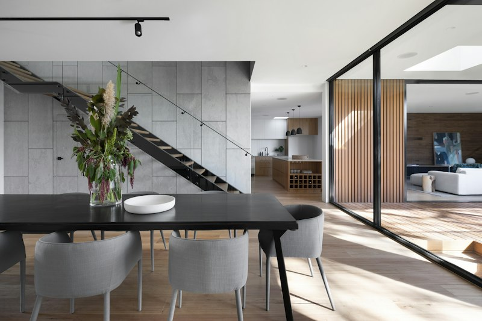
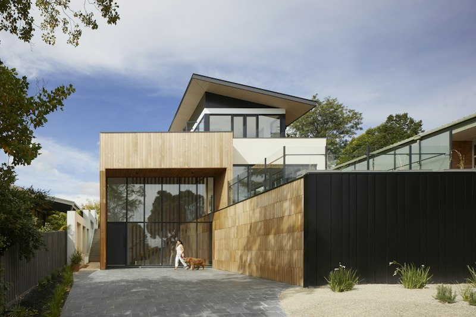

// SELECTED MONOGRAPHS
ARCHITECTURAL WORKS
SWITZERLAND • GERMANY • AUSTRIA

ENGADIN VALLEY // 2025
Piz Nair Alpine Sanctuary
Quarried Valser quartzite masonry embedded directly into the bedrock with triple-glazed frameless panoramic glass wall.

LAKE CONSTANCE // 2024
Bodensee Floating Pavilion
Precast white cement pontoon architecture utilizing geothermal lake-water cooling and charred Swiss larch siding.

BASEL // 2024
Neue Galerie am Rhein
Exposed bush-hammered concrete museum pavilion with northern sawtooth skylights regulating natural daylight to exactly 150 lux.